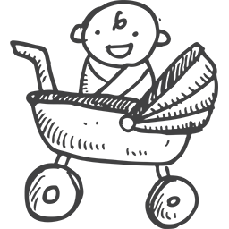

Free · One-on-One
Family Support
Community-based services that assist and support parents in their role as caregivers — newborn, toddler, tween or teen.
FAMILY SUPPORT SERVICES
Support for parents & caregivers
Family Support Services are community-based services that assist and support parents in their role as caregivers. St. Albert Family Resource Centre believes that parents have the most significant influence on their children’s development, and that all families deserve support — our services can take many different forms depending on the strengths and needs of the family.
Newborn, toddler, tween or teen — we have a program unique to every family and their needs. Families have the opportunity to work one-on-one with one of our parent coaches to address parenting concerns they may have.
Parent coaches work with families with children from newborn to the age of seventeen, providing information and support that helps parents enhance their skills and build resiliency. No two families are the same, so St. Albert Family Resource Centre provides customized support to families based on their specific needs.
Call 780-459-7377 to connect with our Family Support Team.
Click a link below to view individual services, or scroll down this page to view all:
SERVICE 01
Home Visitation Program
Home Visitation is a free and voluntary program for families with children ages 0-6 that provides family education and support to parents in raising healthy, safe, and secure children.
A trained Parent Coach will help parents and caregivers identify what areas they require support. Through this process, goals are determined, and the parent coach will support families with the resources and tools needed to achieve their goals. Overall, Home Visitation is flexible and tailored to each family’s needs.
Program benefits
- Parents improve their parenting knowledge and skills
- Parents have an enhanced knowledge of child development
- Helps families connect with appropriate community resources
- Encourages families to make connections with other families
- Helps families build on their strengths
Strengthening & supporting families by
- Building relationships
- Teaching problem-solving skills
- Encouraging positive parent-child relationships
- Supporting early child growth and development (language, fine and gross motor, cognitive, social and emotional skills)
SERVICE 02
Parent Coach Program
Questions or concerns about parenting? Looking for strategies to enhance your skills and parent more effectively? Our Parent Coach is available to meet with families and provide assistance on a short-term basis.
Accessing the Parent Coach can be as easy as making a phone call, meeting face-to-face, or connecting through social media. This program is open to all families.
What you can expect
- A Parent Coach who will meet you in your home, the community, or our office
- Mentorship through challenges
- Support built on your existing strengths
- Increased knowledge that can be applied to your day to day life
- Improved relationships with your peers, family, and community
- A knowledgeable Parent Coach who is trained in the Triple P curriculum
- A culturally appropriate Parent Coach and program

SERVICE 03
Health for Two Program
Health for Two (Hf2) is a FREE program providing support throughout pregnancy and up to 2 months postpartum to women who require extra support to have a healthy pregnancy.
Support is offered to any pregnant woman requiring extra support or experiencing challenges including isolation, food insecurity, unstable housing, domestic violence, teen pregnancy, substance use, mental health challenges, language or cultural barriers, being new to Canada, low income, and more.
Support includes
- Education on pregnancy, birth, baby care and parenting, including pregnancy and parenting options
- Referrals to community supports, such as maternity care, mental health, addictions, housing, food security, etc.
- Resources may include milk coupons and prenatal vitamins, and bus tickets for doctor appointments
SERVICE 04
Developmental Screening
Would you like to know how your child is developing? Are they meeting their developmental milestones?
Nipissing District Developmental Screen (NDDS)
The questionnaire is family friendly, and you will receive immediate feedback, strategies, and activities to try at home with your child. Referrals can also be made to other early childhood programs that will continue to enhance your child’s development.
Ages & Stages Questionnaire (ASQ-3)
Screening young children is an effective, efficient way to check a child’s development. You can celebrate your child’s milestones and know what to look for next; it is also an essential first step toward identifying children with delays or disorders in the critical early years.
Ready to connect?
No two families are the same — call our Family Support Team and we’ll match you with the right support, at no cost.